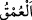
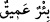
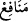
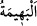
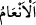

” geniş yol demektir. Râğıb: “el-Fecc” İki dağ arasındaki yol demektir.” der. “Amîk”
uzak demektir. “
” aslında aşağı doğru uzak; yâni derin demektir. Meselâ kuyunun
dibi uzak olduğunda “
” denir.
“Kendilerine âid bir takım” dînî ve dünyevî “yararları yakînen görmeleri…” Bu
faydalar, af, mağfiret ve hac günlerinde yapılan ticârettir. “
” kelimesi nekre olarak
gelmiştir. Çünkü, bu faydalar ile diğer ibâdetlerde bulunmayan bu ibâdete mahsus
faydalar murâd edilmiştir. Ebû Hanîfe (r.h.) haccetmeden önce ibadetleri faziletçe denk
tutardı. Haccedince bu ibâdette gördüğü türlü hususiyetlerden dolayı hac ibadetini
bütün ibadetlerden efdal saydı.
“Allah’ın kendilerine rızık olarak verdiği kurbanlık hayvanlar üzerine belli
günlerde” kurbanların kesildiği günlerde; hediyeler ve kurbanlar hazırlandığı ve
boğazlandığı sırada “Allah’ın ismini anmaları (kurban kesmeleri için).” Âyetten
anlaşılacağı üzere zikirden murad, kurban kesildiği sırada yapılan zikirdir. Kâşifî der
ki: “Kasdedilen, Allah adına kesilen kurbandır. Kâfirler, putlar adına keserlerdi.”
Allah’ın ismini anmanın Kâbe’ye gelmenin gâyesi kılınması, diğerlerinin değil, onun
esas gâye olduğunu bildirmek içindir. “Anma” fiili “rızık olarak verilenler”le
ilişkilendirilmiş, onların kurban edilmesini teşvik etmek üzere onların “kurbanlık
hayvanlar” olduğu açıklanmış ve Allah’ın ismiyle kurban edilmelerinin zarûretine
dikkat çekilmiştir
“
” denizde ve karada dört ayağı olan canlılara verilen isimdir. Bunlar “
”;
yâni, deve, sığır, koyun ve keçi olarak açıklanmıştır. Çünkü bunlardan başkasından
kurban olmaz.
Râğıb der ki: “el-Behîme”: Nutku olmayan canlılara denir. Çünkü onların sesinde
anlaşılmazlık vardır. Ancak bu isim örfte yırtıcı hayvanlar ve kuşlar dışındaki canlılara
has kılınmıştır.
“el-En‘âm”, “neam”ın çoğuludur. Bu kelime, deveye has kılınmıştır. Deveye bu ismin
verilmesi Araplar’ın nazarında devenin en büyük nimet olmasındandır. Deve, sığır ve
koyunun hepsine birden “el-en‘âm” denir. Fakat bu hayvanların arasında deve olmadığı
zaman onlara “el-en‘âm” denilmez.
“Sana (Kâbe’ye) gelsinler.” Burada hitap İbrâhim (a.s.)’adır. Çünkü Kâ’be’ye gelen
kimse, sanki İbrâhim (a.s.)’a gelmiş gibidir. Çünkü o kimse Hz. İbrahim (a.s.)’ın
çağrısına icâbet etmiştir.
İbn Abbâs (r.anhümâ)’dan rivâyet edildiğine göre o şöyle demiştir: Rasûlullah
(s.a.)’in şöyle buyurduğunu duydum: “Binitli hacceden için binitinin attığı her adım
yetmiş hac, yürüyerek hacceden kimseye de attığı her adıma karşılık Harem-i Şerifin
hasenâtı/sevabları ile yedi yüz hasene verilir.” Efendimiz’e: “Haremin hasenâtı
nedir?” diye soruldu. O da: “Bir haseneye yüz bin sevab” buyurdu.[24]
Mücâhid der ki: İbrahim ve İsmail (a.s.) yürüyerek haccettiler. Harem’e
yaklaştıklarında ayakkabılarını çıkarırdılar. Bu, yürüdüğünde rahatsız olmayan kimse